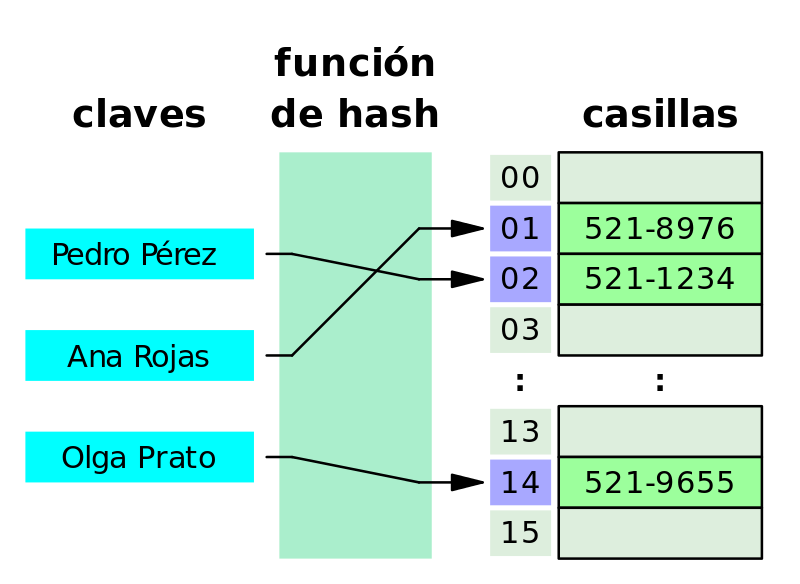

Estructuras de Datos
Que Son las Estructuras de datos
En ciencias de la computación, una estructura de datos. es una forma particular de organizar información en un computador para que pueda ser utilizada de manera eficiente. Diferentes tipos de estructuras de datos son adecuados para diferentes tipos de aplicaciones, y algunos son altamente especializados para tareas específicas. Las estructuras de datos son medios para manejar grandes cantidades de información de manera eficiente para usos tales como grandes bases de datos y servicios de indización de Internet. Por lo general, las estructuras de datos eficientes son clave para diseñar algoritmos eficientes. Algunos métodos formales de diseño de lenguajes de programación destacan las estructuras de datos, en lugar de los algoritmos, como el factor clave de organización en el diseño de software. Más precisamente, una estructura de datos es una colección de valores, las relaciones entre ellos y las funciones y operaciones que se pueden aplicar a los datos. es decir, es una estructura algebraica sobre datos
Las estructuras de datos son medios para manejar grandes cantidades de información de manera eficiente para usos tales como grandes bases de datos y servicios de indización de Internet. Por lo general, las estructuras de datos eficientes son clave para diseñar algoritmos eficientes. Algunos métodos formales de diseño de lenguajes de programación destacan las estructuras de datos, en lugar de los algoritmos, como el factor clave de organización en el diseño de software. Más precisamente, una estructura de datos es una colección de valores, las relaciones entre ellos y las funciones y operaciones que se pueden aplicar a los datos.es decir, es una estructura algebraica sobre datos.
Para que sirven las estructuras de datos
En el ámbito de la informática, las estructuras de datos son aquellas que nos permiten, como desarrolladores, organizar la información de manera eficiente, y en definitiva diseñar la solución correcta para un determinado problema.
Ya sean las más utilizadas comúnmente -como las variables, arrays, conjuntos o clases- o las diseñadas para un propósito específico -árboles, grafos, tablas, etc.-, una estructura de datos nos permite trabajar en un algo nivel de abstracción almacenando información para luego acceder a ella, modificarla y manipularla.
Tipos de Estructuras de datos
Primero, debemos diferenciar entre estructura de dato estática y estructura de dato dinámica
Estructuras de datos estaticas
Las estructuras de datos estáticas son aquellas en las que el tamaño ocupado en memoria se define antes de que el programa se ejecute y no puede modificarse dicho tamaño durante la ejecución del programa, mientras que una estructura de datos dinámica es aquella en la que el tamaño ocupado en memoria puede modificarse durante la ejecución del programa. Cada tipo de estructura dependerá del tipo de aplicación que se requiera. Una típica dentro de las estructuras de datos estáticas son los arrays o Arreglos
Estructuras de datos dinamicas
Por otro lado, vimos que en programación existen estructuras de datos dinámicas, es decir, una colección de elementos -nodos- que normalmente se utilizan para dejar asentados registros. A diferencia de un array que contiene espacio para almacenar un número fijo de elementos, una estructura dinámica de datos se amplía y contrae durante la ejecución del programa. Veamos algunos casos
Estructuras de datos lineales
Por otro lado, vimos que en programación existen estructuras de datos dinámicas, es decir, una colección de elementos -nodos- que normalmente se utilizan para dejar asentados registros. A diferencia de un array que contiene espacio para almacenar un número fijo de elementos, una estructura dinámica de datos se amplía y contrae durante la ejecución del programa. Veamos algunos casos
- Listas Enlazadas
- Pilas
- Colas
Estructuras de datos no lineales
Las estructuras de datos no lineales, también llamadas multienlazadas, son aquellas en las que cada elemento puede estar enlazado a cualquier otro componente. Es decir, cada elemento puede tener varios sucesores o varios predecesores.
Existen dos tipos
- Arboles
- Grafos